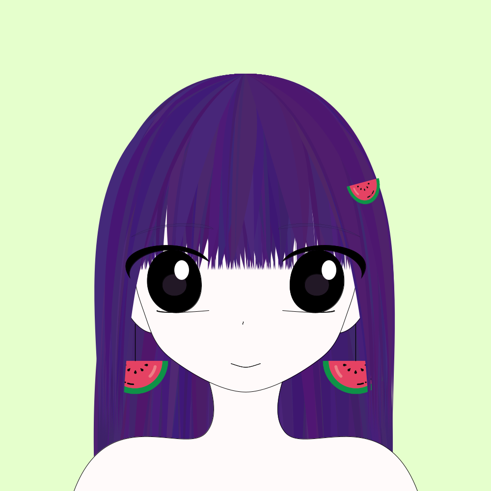
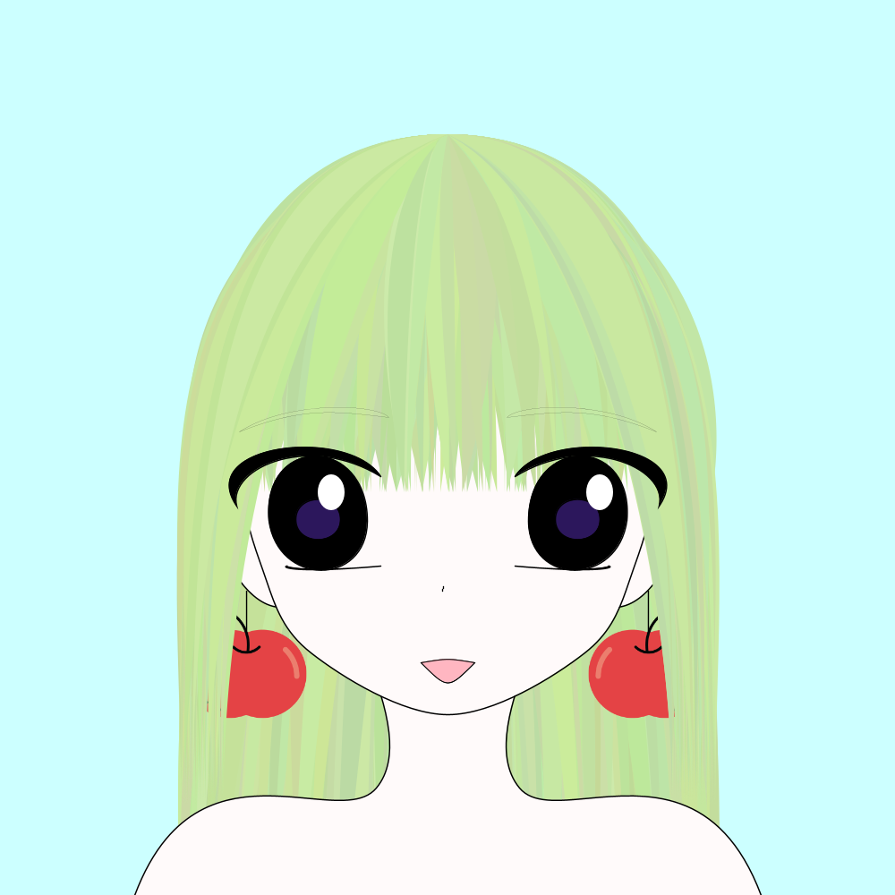
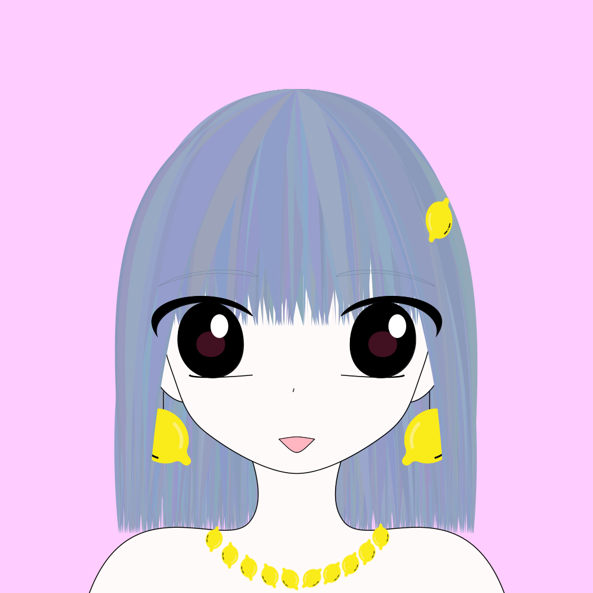
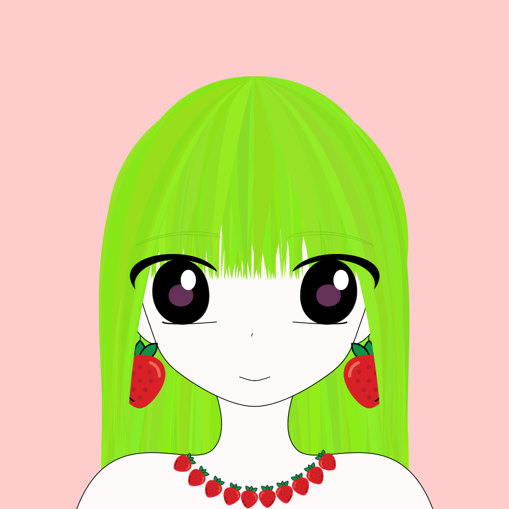
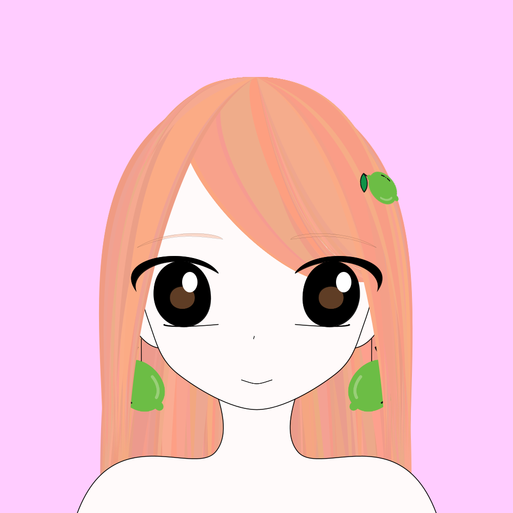

Fruit Girl HomePage
ホーム/Home
図鑑/Gallery
分布図/Distribution
お迎え状況/Pickup

スイカ
Watermelon

りんご
Apple
洋梨
Pear
スイートオレンジ
Sweet Orange

レモン
Lemon
西洋山査子
Hawthorn
さくらんぼ
Cherry Fruit
ブドウ
Grape

いちご
Strawberry
アメリカイチゴ
American Raspberry
オレンジ
Orange
コンカーベリー
Conkerberry
プルーン
Damson
ハックベリー
Hackberry

ライムクアット
Limequat
バナナ
Banana
パイナップル
Pine apple
バーデキンプラム
Burdekin Plum
キウイ
Kiwi
アフリカセイヨウカリン
African Medlar
アフリカンマンゴー
African Mango
Abiu Fruit
Acai
Acerola
Ackee Fruit
African Cherry Orange
African Cucumber
African Moringa
Agave Plant
Aizen Fruit
Amazon Tree Grape
Ambarella
American Black Elderberry
American Chestnut
American Grape
American Hazelnut Shrub
American Pawpaw
American Plum
American Red Elderberry
Apricots
Aprium
Araza Fruit
Arhat fruit
Atemoya
Atherton Raspberry
Avocado
Babaco
Bacupari Fruit
Bacuri Fruit
Bael Fruit
Balsam Apple
Barberry
Batuan Fruit
Betel Nut
Bignay Fruit
Bilimbi
Black Apple
Black Mulberry
BlackSapote
Blood Lime
Bolwarra
Boysenberry
Brazilian Guava
Bread Fruit
Broad-leaf Bramble
Brush Cherry
Burmese Grape
Calabash
Calamansi
Calamondins
Canary Melon
Canistel
cantaloupe
Cape Gooseberry
Capuli Cherry
Carob Fruit
Cashew Apple
Cedar Bay Cherry
Cempedak
Ceylon Gooseberry
Charichuelo Fruit
Chayote Fruit
Cherimoya Fruit
Chokecherry
Citrofortunella
Clementines
Cluster Fig
Coco Plum
Common Apple Berry
Cornelian Cherry
Cucumber
Cupuacu
Date plum
Davidson's plum
Dead Man's Fingers
Dekopon
Desert fig
Desert lime
Dodder laurel
Double Coconut
Dragon Fruit
Duku fruit
Durian
Eastern Hawthorn
Elephant apple
Emu Apple
Emu berry
Fairchild tangerine
False mastic
Feijoa
Fibrous Satinash
Finger Lime
Florida strangler fig
Gac Fruit
Galia melon
Gambooge
Genip
Giant Granadilla
Golden apple
Goumi Fruit
Governor's Plum
Granadilla
Grapefruit
Grapple
Greengage
Ground Plum
Grumichama
Guanabana
Guarana
Guavaberry
Hardy-kiwi
Honeydew
Honeysuckle
Horned melon
Huckleberry
Huito
Ice Cream Bean
Ilama
Illawarra Plum
Imbe fruit
Indian almond
Indian Fig
Indian Gooseberry
Indian jujube
Indian Prune
Jabotacaba
Jackfruit
Jambul fruit
Japanese Persimmon
Jatoba fruit
Jelly Palm
Jocote
Jostaberry
Jujube
Junglesop
Juniper berry
Kabosu Fruit
kaffir lime
Kahikatea
Kakadu plum
Kapok
Karkalla
Karonda
Kei apple
Kepel
Keule
Korlan
Kumquat
Kundong
Kutjera
Kwai Muk
Lablab
Lady apple
Lakoocha
Langsat
Lapsi
Lardizabala
Lemato
Lemon aspen
Leucaena
Lillypilly
Limeberry
Lingonberry
Loganberry
Loquat
Lucuma
Lychee
Ma-praang
Macadamia
Madrono
Malay Apple
Mamey Sapote
Mammee Apple
Mamoncillo
Mandarin
Mangaba
Mangosteen
Manila Tamarind
Manoao
Maqui
Marang
Marionberry
Marula
Mayan Nut
Mayapple
Maypop
Melinjo
MelonPear
Midyim
Miracle fruit
Mock Strawberry
Monstera Delicisiosa
Mora de Castilla
Morinda
Mountain pepper
Mountain Soursop
Muscadine
Muscat
Naartjie
Nageia
Nance
Naranjilla
Nectacotum
Nectarines
Neem
Nere
Nonda plum
Nungu
Nutmeg
Oil Palm
Olallieberry
Olive
Orangelo
Oregon grape
Oroblanco
Ortanique
Otaheite gooseberry
Papaya
Passion Fruit
Peach
Peach palm
Peanut
Peanut butter fruit
Pecan
Pequi
Persian lime
Persimmon
Peumo
Phalsa
Physalis Fruit
Pigeon pea
Pigeon plum
Pigface
Pili Nut
Pineberry
Pink-flowered Native Raspberry
Pitombia
Plum
Plumcot
Pluot
Pomato
Pomegranate
Prickly pear
Pulasan
Pummelo
Quandong
Queensland ebony
Quince
Rambutan
Rangpur
Red granadilla
Red Mombin
Red mulberry
Riberry
Rollinia
Rose Apple
Rose leaf bramble
Rose myrtle
Rowan
Safou
Sageretia
Saguaro
Salak
Salmonberry
Sandpaper Fig
Santol
Sapodilla
Saskatoonberry
Satsuma Mandarin
Sea buckthorn
Sea Grape
Sloe Fruit
Snowberry
Soncoya
Southern Crabapple
Spanish lime
Spiny Monkey-orange
Star Apple
Star Fruit
Strawberry guava
Sugar Apple
Surinam cherry
Sweet Lemon
Sweet Pepper
Sycamore fig
Tamarillo
Tamarind
Tangelo
Tangor
Tanjong
Tayberry
Texas Persimmon
Thimbleberry
Tomato
Tropical Almond
Ugli
Ugni
Vanilla
Velvet apple
Velvet tamarind
Walnut
Wampee
Wax Gourd
Wax jambu
White aspen
White Mulberry
White sapote
Wild Mangosteen
Wild orange
Wineberry
Wolfberry
Wongi
Yangmei
Yellow plum
Yew Fruit
Youngberry
Yuzu